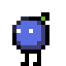
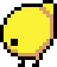
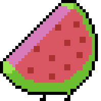

Enemies
import { Rectangle } from "./Rectangle" import { SpriteRenderer } from "./SpriteRenderer" import { worldHeight } from "./world" export function drawWrappedAroundBottom(x: number, y: number, sprite: Rectangle, renderer: SpriteRenderer, mirrored: boolean = false) { renderer.sprite(x, y, sprite, mirrored) if (y + sprite.height > worldHeight) { const overflow = y + sprite.height - worldHeight renderer.sprite(x, -sprite.height + overflow, sprite, mirrored) } }
Blueberry
The Blueberry is a quick small enemy with low health.
import { Entity } from "./entity" import { Vector2 } from "./Vector2" import { SpriteRenderer } from "./SpriteRenderer" import { removeEnemy, addEnemy } from "./main" import { worldHeight } from "./world" import { drawWrappedAroundBottom } from "./enemy" import { TextureAtlas } from "./TextureAtlas" import { FlyingPart } from "./FlyingPart" import { AnimationPlayer, switchAnimation } from "./AnimationPlayer"; import { AnimationMode, Animation } from "./Animation"; import { Frame } from "./Frame"; import { tVector2, tRectangle } from "./temporaryObjects"; import { Level } from "./Level"; import { resolveCollision } from "./collission"; export class Blueberry implements Entity { health = 1 position = new Vector2 private velocity = new Vector2 direction = -1 private run = animations.run private fall = animations.fall private animationPlayer = new AnimationPlayer(this.run) constructor( private spriteRenderer: SpriteRenderer, private level: Level ) { } getHitBy(position: Vector2, damage: number) { position this.health -= damage if (this.health > 0) return removeEnemy(this) const mirrored = this.direction > 0 const parts = [ new FlyingPart(this.spriteRenderer, TextureAtlas.blueberryPart0, mirrored), new FlyingPart(this.spriteRenderer, TextureAtlas.blueberryPart1, mirrored) ] for (const part of parts) { part.position.x = this.position.x part.position.y = this.position.y addEnemy(part) } } getBoundingRectangle() { const frame = this.animationPlayer.currentSprite() return tRectangle.get(this.position.x + 5, this.position.y + 5, frame.width - 8, frame.height - 9) } update(delta: number) { this.animationPlayer.update(delta) const oldPosition = tVector2.get(this.position.x, this.position.y) this.velocity.y += 550 * delta this.position.y += this.velocity.y * delta this.position.x += this.velocity.x * delta const width = this.animationPlayer.currentSprite().width const height = this.animationPlayer.currentSprite().height for (let line of this.level.collisionLines) { const newPosition = resolveCollision(oldPosition, this.position, width, height, line) if (newPosition) { if (newPosition.y < this.position.y) { this.velocity.y = 0 } if (newPosition.x < this.position.x) { this.velocity.x = 0 this.direction = -1 } else if (newPosition.x > this.position.x) { this.velocity.x = 0 this.direction = 1 } this.position.set(newPosition.x, newPosition.y) } } if (this.velocity.y == 0) { this.velocity.x += 2 * this.direction } if (this.position.y > worldHeight) { this.position.y = 0 } if (this.velocity.y == 0) switchAnimation(this.run, this.animationPlayer) if (this.velocity.y > 0) switchAnimation(this.fall, this.animationPlayer) } draw() { const sprite = this.animationPlayer.currentSprite() drawWrappedAroundBottom(this.position.x, this.position.y, sprite, this.spriteRenderer, this.direction > 0) } } const animations = { run: new Animation(AnimationMode.loop, [ new Frame(0.1, TextureAtlas.blueberryRun0), new Frame(0.1, TextureAtlas.blueberryRun1), new Frame(0.1, TextureAtlas.blueberryRun2), new Frame(0.1, TextureAtlas.blueberryRun3), new Frame(0.1, TextureAtlas.blueberryRun4), new Frame(0.1, TextureAtlas.blueberryRun5), ]), fall: new Animation(AnimationMode.loop, [ new Frame(0.1, TextureAtlas.blueberryRun0), new Frame(0.1, TextureAtlas.blueberryRun1) ]), }
Lemon
The Lemon is a bit slower than the Blueberry however it has more health.
import { Entity } from "./entity" import { Vector2 } from "./Vector2" import { SpriteRenderer } from "./SpriteRenderer" import { removeEnemy, addEnemy } from "./main" import { worldHeight } from "./world" import { drawWrappedAroundBottom } from "./enemy" import { FlyingPart } from "./FlyingPart" import { TextureAtlas } from "./TextureAtlas" import { AnimationPlayer } from "./AnimationPlayer"; import { Animation, AnimationMode } from "./Animation"; import { Frame } from "./Frame"; import { tRectangle } from "./temporaryObjects"; import { Level } from "./Level"; import { resolveCollision } from "./collission"; // TODO there seems like the parts jump when they are first created export class Lemon implements Entity { health = 5 private run = animations.run private animationPlayer = new AnimationPlayer(this.run) position = new Vector2 private velocity = new Vector2 direction = -1 constructor( private spriteRenderer: SpriteRenderer, private level: Level ) { } getHitBy(position: Vector2, damage: number) { position this.health -= damage if (this.health > 0) return removeEnemy(this) const mirrored = this.direction > 0 const parts = [ new FlyingPart(this.spriteRenderer, TextureAtlas.lemonPart0, mirrored), new FlyingPart(this.spriteRenderer, TextureAtlas.lemonPart1, mirrored) ] for (const part of parts) { part.position.x = this.position.x part.position.y = this.position.y addEnemy(part) } } getBoundingRectangle() { const frame = this.animationPlayer.currentSprite() return tRectangle.get(this.position.x + 4, this.position.y + 3, frame.width - 4, frame.height - 7) } update(delta: number) { this.animationPlayer.update(delta) const oldPosition = new Vector2(this.position.x, this.position.y) this.velocity.y += 550 * delta this.position.y += this.velocity.y * delta this.position.x += this.velocity.x * delta const width = this.animationPlayer.currentSprite().width const height = this.animationPlayer.currentSprite().height for (let line of this.level.collisionLines) { const newPosition = resolveCollision(oldPosition, this.position, width, height, line) if (newPosition) { if (newPosition.y < this.position.y) { this.velocity.y = 0 } if (newPosition.x < this.position.x) { this.velocity.x = 0 this.direction = -1 } else if (newPosition.x > this.position.x) { this.velocity.x = 0 this.direction = 1 } this.position.set(newPosition.x, newPosition.y) } } if (this.velocity.y == 0) { this.velocity.x += 1.5 * this.direction } if (this.position.y > worldHeight) { this.position.y = 0 } //if (this.velocity.y == 0) switchAndResetIfNewAnimation(Animations.blueBerry.run, this.animationPlayer) //if (this.velocity.y > 0) switchAndResetIfNewAnimation(Animations.blueBerry.fall, this.animationPlayer) } draw() { const sprite = this.animationPlayer.currentSprite() drawWrappedAroundBottom(this.position.x, this.position.y, sprite, this.spriteRenderer, this.direction > 0) } } const animations = { run: new Animation(AnimationMode.loop, [ new Frame(0.1, TextureAtlas.lemonRun0), new Frame(0.1, TextureAtlas.lemonRun1), new Frame(0.1, TextureAtlas.lemonRun2), new Frame(0.1, TextureAtlas.lemonRun3), new Frame(0.1, TextureAtlas.lemonRun4), new Frame(0.1, TextureAtlas.lemonRun5), ]), fall: new Animation(AnimationMode.loop, [ new Frame(0.1, TextureAtlas.lemonFall0), new Frame(0.1, TextureAtlas.lemonFall1) ]), }
Water melon
The Water melon has a lot of health however it is very slow.
import { Entity } from "./entity" import { Vector2 } from "./Vector2" import { SpriteRenderer } from "./SpriteRenderer" import { removeEnemy, addEnemy } from "./main" import { worldHeight } from "./world" import { drawWrappedAroundBottom } from "./enemy" import { FlyingPart } from "./FlyingPart" import { TextureAtlas } from "./TextureAtlas" import { AnimationPlayer } from "./AnimationPlayer"; import { Animation, AnimationMode } from "./Animation"; import { Frame } from "./Frame"; import { tRectangle, tVector2 } from "./temporaryObjects"; import { Level } from "./Level"; import { resolveCollision } from "./collission"; export class WaterMelon implements Entity { private health = 5 private animationPlayer = new AnimationPlayer(animations.run) private velocity = new Vector2 position = new Vector2 direction = -1 constructor( private spriteRenderer: SpriteRenderer, private level: Level ) { } getHitBy(position: Vector2, damage: number) { position this.health -= damage if (this.health > 0) return removeEnemy(this) const mirrored = this.direction > 0 const parts = [ new FlyingPart(this.spriteRenderer, TextureAtlas.melonPart0, mirrored), new FlyingPart(this.spriteRenderer, TextureAtlas.melonPart1, mirrored), new FlyingPart(this.spriteRenderer, TextureAtlas.melonPart2, mirrored) ] for (const part of parts) { part.position.set(this.position.x, this.position.y) addEnemy(part) } } update(delta: number) { this.animationPlayer.update(delta) const oldPosition = tVector2.get(this.position.x, this.position.y) this.velocity.y += 550 * delta this.position.y += this.velocity.y * delta this.position.x += this.velocity.x * delta const width = this.animationPlayer.currentSprite().width const height = this.animationPlayer.currentSprite().height for (let line of this.level.collisionLines) { const newPosition = resolveCollision(oldPosition, this.position, width, height, line) if (newPosition) { if (newPosition.y < this.position.y) { this.velocity.y = 0 } if (newPosition.x < this.position.x) { this.velocity.x = 0 this.direction = -1 } else if (newPosition.x > this.position.x) { this.velocity.x = 0 this.direction = 1 } this.position.set(newPosition.x, newPosition.y) } } if (this.velocity.y == 0) { this.velocity.x += 1 * this.direction } if (this.position.y > worldHeight) { this.position.y = 0 } //if (this.velocity.y == 0) switchAndResetIfNewAnimation(Animations.blueBerry.run, this.animationPlayer) //if (this.velocity.y > 0) switchAndResetIfNewAnimation(Animations.blueBerry.fall, this.animationPlayer) } getBoundingRectangle() { const frame = this.animationPlayer.currentSprite() return tRectangle.get(this.position.x + 10, this.position.y + 7, frame.width - 14, frame.height - 11) } draw() { const sprite = this.animationPlayer.currentSprite() drawWrappedAroundBottom(this.position.x, this.position.y, sprite, this.spriteRenderer, this.direction > 0) } } const animations = { run: new Animation(AnimationMode.loop, [ new Frame(0.1, TextureAtlas.melonRun0), new Frame(0.1, TextureAtlas.melonRun1), new Frame(0.1, TextureAtlas.melonRun2), new Frame(0.1, TextureAtlas.melonRun3), new Frame(0.1, TextureAtlas.melonRun4), new Frame(0.1, TextureAtlas.melonRun5), ]), fall: new Animation(AnimationMode.loop, [ ]), }